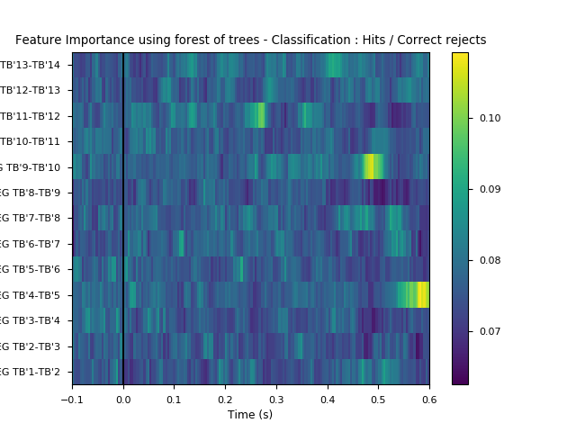

- The documentation is here : http://sab-main.readthedocs.io
- Github link : https://github.com/tinmarD/SAB_main
The SAB (Speed and Accuracy Boosting) was first presented in the following paper : https://www.researchgate.net/publication/263213203_The_speed_of_visual_recognition_memory
The SAB_main package allows you to do several analyses: * ERPs * Phase, ITPC (Inter-Trial Phase Coherence) * Feature extraction * Correlations between feature and reaction times
Installation
SAB_main is using Python 3 The following packages are needed : * pywavelets * tqdm * seaborn * datetime * sklearn * scipy * numpy * matplotlib * _pickle
Screenshots
ERP analyses

Phase analyses

Extract feature and evaluate their importance for predicting the behavioural response

Evaluate correlation between features and reaction times